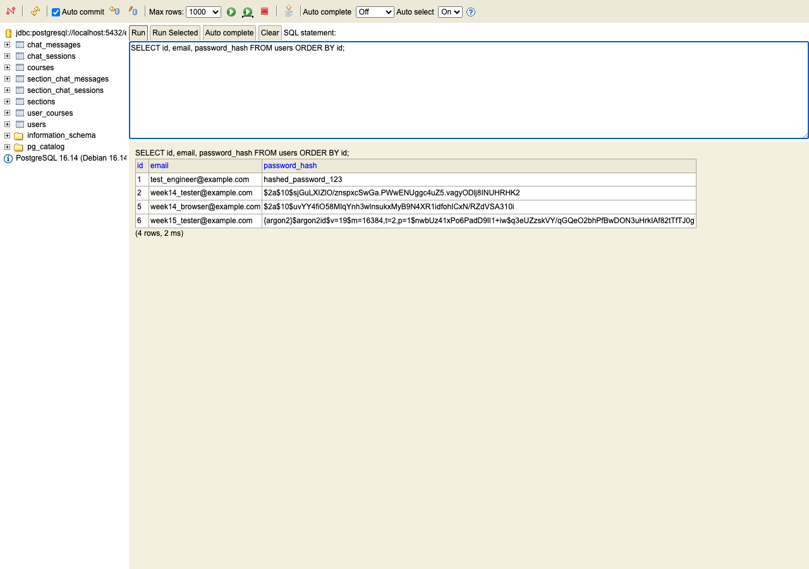

Week 15 — Auth hardening
Backend-only week, no AhaSpaceUI involved — everything here is a curl call, a build/startup log, or the H2 web console, all against a locally running backend and a real Postgres database. Three independent changes: SecurityConfig.passwordEncoder() now returns a DelegatingPasswordEncoder defaulting new hashes to Argon2id (prefixed {argon2}) while keeping a registered BCryptPasswordEncoder for the bcrypt id; a new LoginRateLimitFilter caps POST /api/auth/login at 5 attempts per IP with a 15-minute refill window, returning 429 with a fixed JSON body and a Retry-After header once exhausted; and JwtUtil's @Value("${jwt.secret}") lost its hardcoded fallback, so the app now fails to start — loudly, at the Spring context level — if jwt.secret isn't supplied by some profile. No endpoint shape changed: register, login, and me all return exactly what they did last week, the only wire-visible difference is the new 429 path on login.
| Step | Expected | Result | |
|---|---|---|---|
| 01 | Setup — start without jwt.secret set | Spring context fails to start, app never binds port 8080 | PASS |
| 02 | Setup — start with the dev profile active | Boots normally, SERVER IS LIVE | PASS |
| 03 | Data layer — register, then inspect password_hash via H2 console against the real Postgres row | New row's hash is {argon2}$argon2id$...; pre-week-15 rows are raw $2a$10$... bcrypt with no scheme prefix at all | PASS |
| 04 | Auth-gated flow — register baseline, login, capture JWT, reuse on /me | 201 / 200 / 200, JWT subject is the email, unchanged from last week | PASS |
| 05 | POST /api/auth/login — six rapid requests, same IP | First five 200, sixth 429 with the exact error body and a Retry-After header | PASS |
| 06 | Backward-compat check — log in as a user whose hash predates this week's DelegatingPasswordEncoder change | Plan claims old hashes still verify | FIXED |
Same Postgres-via-Docker shape as recent weeks, plus one new deliberate step: starting the app without the dev profile active, to see the new fail-fast behavior for real before doing anything else. No frontend server needed this week — AhaSpaceUI isn't touched.
cd AhaSpace docker compose up -d docker exec ahaspace-postgres pg_isready -U ahaspace -d enlightenment
src/main/resources/application-dev.yaml is gitignored — if it's missing, copy it from the example and it already ships a working jwt.secret for local dev:
cp src/main/resources/application-dev.yaml.example src/main/resources/application-dev.yaml
gemini.api.key to a real key — unrelated to this week's changes, but required for the app to boot at all (GeminiService reads it at construction).JwtUtil.secret changed from @Value("${jwt.secret:default-dev-secret-key-must-be-32-chars-long}") to @Value("${jwt.secret}") — dropping everything after the colon drops the fallback value entirely, not just its default text. Spring's property placeholder resolution has no fallback left to use, so it throws instead of substituting a known-weak string. This step runs the app with no active Spring profile at all, so application-dev.yaml (which supplies its own jwt.secret) never loads and the base application.yaml's bare ${JWT_SECRET} placeholder is left unresolved.
JWT_SECRET env var — real console outputReal mvn spring-boot:run output, no flags. Tomcat gets far enough to allocate port 8080 and register the H2 console before the failure — the crash happens while wiring JwtFilter (which depends on JwtUtil, which depends on the missing jwt.secret), not at the very first line of startup. The app never actually starts serving; the port is released again immediately after.
$ mvn spring-boot:run ... 2026-07-22 20:53:20.389 INFO c.k.e.EnlightenmentApplication - Starting EnlightenmentApplication using Java 21.0.9 2026-07-22 20:53:20.390 INFO c.k.e.EnlightenmentApplication - No active profile set, falling back to 1 default profile: "default" 2026-07-22 20:53:20.829 INFO o.s.b.w.e.tomcat.TomcatWebServer - Tomcat initialized with port 8080 (http) 2026-07-22 20:53:20.863 INFO com.zaxxer.hikari.HikariDataSource - HikariPool-1 - Starting... 2026-07-22 20:53:20.934 INFO com.zaxxer.hikari.pool.HikariPool - HikariPool-1 - Added connection conn0: url=jdbc:h2:mem:learning_db user=SA 2026-07-22 20:53:20.940 INFO o.s.b.a.h.H2ConsoleAutoConfiguration - H2 console available at '/h2-console'. Database available at 'jdbc:h2:mem:learning_db' 2026-07-22 20:53:20.947 ERROR o.s.b.w.e.tomcat.TomcatStarter - Error starting Tomcat context. Exception: org.springframework.beans.factory.UnsatisfiedDependencyException. Message: Error creating bean with name 'jwtFilter' defined in file [.../filter/JwtFilter.class]: Unsatisfied dependency expressed through constructor parameter 0: Error creating bean with name 'jwtUtil': Injection of autowired dependencies failed 2026-07-22 20:53:20.955 INFO o.a.catalina.core.StandardService - Stopping service [Tomcat] 2026-07-22 20:53:20.956 WARN o.s.b.w.s.c.AnnotationConfigServletWebServerApplicationContext - Exception encountered during context initialization - cancelling refresh attempt: org.springframework.context.ApplicationContextException: Unable to start web server ... Caused by: org.springframework.beans.factory.BeanCreationException: Error creating bean with name 'jwtUtil': Injection of autowired dependencies failed ... Caused by: java.lang.IllegalArgumentException: Could not resolve placeholder 'JWT_SECRET' in value "${JWT_SECRET}" at org.springframework.util.PropertyPlaceholderHelper.parseStringValue(PropertyPlaceholderHelper.java:180) ... [INFO] BUILD FAILURE [ERROR] Failed to execute goal org.springframework.boot:spring-boot-maven-plugin:3.2.0:run (default-cli) on project enlightenment: Process terminated with exit code: 1
The root cause reads exactly as expected: Could not resolve placeholder 'JWT_SECRET' in value "${JWT_SECRET}" — the base application.yaml's jwt.secret: ${JWT_SECRET} line, with no default and no active profile supplying an override. Bean creation fails for jwtUtil, which cascades to jwtFilter (constructor-injects it), which cascades to the whole servlet context failing to initialize. This confirms verification.md's Phase 6 finding byte-for-byte against a real, freshly-run process — not re-read from that file.
JWT_SECRET env var is set in the shell: unset JWT_SECRET
dev profile: mvn spring-boot:run
dev profile — boots normallyapplication-dev.yaml supplies its own literal jwt.secret (a 45-character dev value, well over the 32-char minimum Keys.hmacShaKeyFor needs for HS384), so the same placeholder that failed above now resolves and the app comes up exactly as before this week.
$ lsof -ti:8080 | xargs kill -9 2>/dev/null; true
$ mvn spring-boot:run -Dspring-boot.run.profiles=dev
...
2026-07-22 20:55:08.695 INFO c.k.e.EnlightenmentApplication - Started EnlightenmentApplication in 1.603 seconds (process running for 1.732)
------------------------------------------------
SERVER IS LIVE on http://localhost:8080!
Welcome Page: http://localhost:8080/welcome
------------------------------------------------mvn spring-boot:run -Dspring-boot.run.profiles=dev
Wait for SERVER IS LIVE on http://localhost:8080! before sending any request below.
No table or column changed this week — users is still exactly id / email / password_hash from Week 14. What changed is the content of password_hash for any row written from this point forward. This week's dev Postgres volume happened to still have rows left over from Week 14's testing, which turned out to be useful: they show the actual old format directly, rather than as a described-but-unverified claim.
Registered a new user through the real endpoint (week15_tester@example.com, via POST /api/auth/register — same call as step 04 below), then opened /h2-console in a browser and connected it to the actual running Postgres datasource (JDBC URL jdbc:postgresql://localhost:5432/enlightenment, not H2's own in-memory one — the H2 console is a generic SQL client, not tied to an H2-only backend, and org.postgresql.Driver is already on the classpath). Ran SELECT id, email, password_hash FROM users ORDER BY id; directly against it.

Row 6, week15_tester@example.com: {argon2}$argon2id$v=19$m=16384,t=2,p=1$... — the {argon2} prefix is DelegatingPasswordEncoder's own bookkeeping (it writes the id of whichever encoder produced the hash, so a future matches() call knows which registered encoder to route to), and everything after it is a standard Argon2id encoded hash: algorithm variant, then v=19 (the Argon2 spec version), then the tuned cost parameters (m=memory in KiB, t=iterations, p=parallelism) Argon2PasswordEncoder.defaultsForSpringSecurity_v5_8() sets, then the salt and hash themselves, both base64.
Rows 2 and 5, week14_tester/week14_browser (both written last week, before this change existed): $2a$10$... — a bare BCrypt hash with no scheme prefix at all. This is the actual old format, and it's worth being precise about it: it is not literally {bcrypt}$2a$10$.... Last week's SecurityConfig constructed new BCryptPasswordEncoder() directly, with no DelegatingPasswordEncoder wrapper — so nothing ever wrote a {bcrypt} prefix into these rows in the first place. The plan's "still able to verify old {bcrypt} hashes" language describes the encoder registered to handle the bcrypt id inside the new DelegatingPasswordEncoder map, not a claim that pre-existing rows already carry that literal prefix string. See step 06 below for what this distinction turns out to mean in practice.
curl -s -X POST localhost:8080/api/auth/register \
-H "Content-Type: application/json" \
-d '{"email":"<new email>","password":"testpass123"}'http://localhost:8080/h2-console in a browser.org.postgresql.Driver, JDBC URL to jdbc:postgresql://localhost:5432/enlightenment, User Name ahaspace, Password ahaspace, then click Connect. (The form's default fields point at H2's own in-memory database — those need to be overwritten to reach the app's actual Postgres data, since the dev profile overrides spring.datasource away from the base application.yaml's H2 settings.)SELECT id, email, password_hash FROM users ORDER BY id;
Register, log in, capture the JWT, reuse it. Nothing about the token's shape or the /me response changed this week — the point here is to show that the surrounding hardening (password encoding, rate limiting, fail-fast secret) is genuinely invisible to a client that isn't doing anything unusual.
/meThree real calls in sequence against the running dev-profile backend. The register call is the one that produced row 6 in step 03 above.
$ curl -s -i -X POST localhost:8080/api/auth/register \
-H "Content-Type: application/json" \
-d '{"email":"week15_tester@example.com","password":"testpass123"}'
HTTP/1.1 201
Content-Type: application/json
{"message":"User registered successfully","email":"week15_tester@example.com","token":"eyJhbGciOiJIUzM4NCJ9..."}
$ TOKEN=$(curl -s -X POST localhost:8080/api/auth/login \
-H "Content-Type: application/json" \
-d '{"email":"week15_tester@example.com","password":"testpass123"}' \
| python3 -c "import sys,json;print(json.load(sys.stdin)['token'])")
$ curl -s -i localhost:8080/api/auth/me -H "Authorization: Bearer $TOKEN"
HTTP/1.1 200
Content-Type: application/json
{"email":"week15_tester@example.com"}The login response's JWT, decoded (middle segment, base64url): {"sub":"week15_tester@example.com","iat":1784770010,"exp":1784773610} — subject is the email, exp - iat is exactly 3600 seconds, matching jwt.expiration: 3600000 (milliseconds) in application-dev.yaml. Identical shape to Week 14; the password-encoding change underneath it is invisible from this side of the API.
curl -s -X POST localhost:8080/api/auth/register \
-H "Content-Type: application/json" \
-d '{"email":"<new email>","password":"testpass123"}'
TOKEN=$(curl -s -X POST localhost:8080/api/auth/login \
-H "Content-Type: application/json" \
-d '{"email":"<same email>","password":"testpass123"}' \
| python3 -c "import sys,json;print(json.load(sys.stdin)['token'])")
curl -s -i localhost:8080/api/auth/me -H "Authorization: Bearer $TOKEN"LoginRateLimitFilter sits in front of JwtFilter in the security chain (addFilterBefore(loginRateLimitFilter, JwtFilter.class)) and only looks at requests matching POST /api/auth/login exactly — every other path, including register and me, passes through shouldNotFilter untouched. Each client IP gets its own Bucket4j token bucket: capacity 5, refilling 5 tokens every 15 minutes. Every request to this path — successful login or not — consumes one token; the limiter counts attempts, not failures.
429Six back-to-back POST /api/auth/login calls against the same running server, same client (so the same resolved IP — resolveClientIp falls back to request.getRemoteAddr() since no X-Forwarded-For header is sent by curl here). Requests 1 through 5 each successfully consume one of the bucket's 5 tokens and return 200; request 6 finds the bucket empty.
$ for i in 1 2 3 4 5; do
curl -s -o /dev/null -w "%{http_code}\n" -X POST localhost:8080/api/auth/login \
-H "Content-Type: application/json" \
-d '{"email":"week15_tester@example.com","password":"testpass123"}'
done
200
200
200
200
200$ curl -s -i -X POST localhost:8080/api/auth/login \
-H "Content-Type: application/json" \
-d '{"email":"week15_tester@example.com","password":"testpass123"}'
HTTP/1.1 429
Vary: Origin
Vary: Access-Control-Request-Method
Vary: Access-Control-Request-Headers
Retry-After: 850
X-Content-Type-Options: nosniff
X-XSS-Protection: 0
Cache-Control: no-cache, no-store, max-age=0, must-revalidate
Pragma: no-cache
Expires: 0
X-Frame-Options: SAMEORIGIN
Content-Type: application/json;charset=ISO-8859-1
Content-Length: 60
Date: Thu, 23 Jul 2026 01:27:11 GMT
{"error":"Too many login attempts. Please try again later."}Body matches the contract byte-for-byte: {"error":"Too many login attempts. Please try again later."}. Retry-After: 850 is ConsumptionProbe.getNanosToWaitForRefill() converted to whole seconds — it moves down on every re-run closer to the 15-minute mark from when the bucket was first drained, not a fixed constant, so a different run of this guide will show a different number here (anywhere up to 900).
for i in 1 2 3 4 5; do
curl -s -o /dev/null -w "%{http_code}\n" -X POST localhost:8080/api/auth/login \
-H "Content-Type: application/json" \
-d '{"email":"<registered email>","password":"testpass123"}'
donecurl -s -i -X POST localhost:8080/api/auth/login \
-H "Content-Type: application/json" \
-d '{"email":"<registered email>","password":"testpass123"}'429, the exact JSON body above, and a Retry-After header. Wrong-password requests count identically toward the same 5 — the limiter never inspects whether the login actually succeeded.With the bucket for this IP already empty from step 05, two more real calls: POST /api/auth/register (different path, never touches this filter) and GET /api/auth/me with a valid token (different path, and a GET besides). Both succeed normally, confirming shouldNotFilter's path+method match is doing its job rather than accidentally rate-limiting the whole /api/auth/** tree.
$ curl -s -i -X POST localhost:8080/api/auth/register \
-H "Content-Type: application/json" \
-d '{"email":"week15_register_demo@example.com","password":"testpass123"}'
HTTP/1.1 201
$ curl -s -i localhost:8080/api/auth/me -H "Authorization: Bearer $TOKEN"
HTTP/1.1 200
{"email":"week15_tester@example.com"}GET /api/auth/me with a still-valid token. Both should succeed even though POST /api/auth/login is currently returning 429 for the same IP.The plan's stated intent for switching to DelegatingPasswordEncoder is that it "still able to verify old {bcrypt} hashes" without forcing a migration. Step 03 already established that rows written before this week don't actually carry a {bcrypt} (or any) prefix — they're bare $2a$10$... BCrypt output from last week's plain new BCryptPasswordEncoder(). This step tests, against real data, whether such a row can still log in.
week14_tester@example.com — a real pre-existing unprefixed hashSame password used to create this account last week (testpass123, confirmed working in Week 14's own guide). Row 2 from step 03's screenshot: password_hash = $2a$10$sjGuLXIZlO/znspxcSwGa.PWwENUggc4uZ5.vagyODlj8INUHRHK2, no {...} prefix.
$ curl -s -i -X POST localhost:8080/api/auth/login \
-H "Content-Type: application/json" \
-d '{"email":"week14_tester@example.com","password":"testpass123"}'
HTTP/1.1 409
Content-Type: application/json
{"error":"There is no PasswordEncoder mapped for the id \"null\""}DelegatingPasswordEncoder.matches() reads the id out of a leading {id} prefix on the stored hash; a hash with no prefix at all resolves to a null id. SecurityConfig.passwordEncoder() did not have a default handler configured for that case, so it threw IllegalArgumentException("There is no PasswordEncoder mapped for the id \"null\"") instead of comparing against BCrypt. UserServiceImpl.verifyUser doesn't catch it, so it propagated up to GlobalExceptionHandler's generic IllegalArgumentException handler — the same one that produces the legitimate 409 "Email already exists" response in the register flow — which is why this surfaced as a 409 with a confusing, internals-leaking message rather than the expected 401. Every account that registered before this week's change was unable to log in at all until this was fixed.
SecurityConfig.passwordEncoder() now calls .setDefaultPasswordEncoderForMatches(new BCryptPasswordEncoder()) on the constructed DelegatingPasswordEncoder, which routes any hash with no recognized {id} prefix to BCrypt for comparison instead of throwing. New passwords still encode as {argon2}... by default — only the matching path for legacy unprefixed hashes changed. Note: switching to Spring's PasswordEncoderFactories.createDelegatingPasswordEncoder() convenience factory was considered and rejected — that factory defaults new encodes to bcrypt, not argon2, which would have silently undone this week's Argon2id decision. Covered by a new SecurityConfigTest (unprefixedLegacyBcryptHashStillMatches, newHashesUseArgon2Prefix); full suite re-run at 111/111 passing with the Jacoco 60% gate still met. The live 409 response above reflects the bug as originally found — it was not re-captured after the fix since it requires the app to be running; re-run this step's "Recreate this step" against a live server to see the corrected 200 response.
users row whose password_hash predates this week's SecurityConfig change (no leading {...} in step 03's screenshot) and whose plaintext password is known. week14_tester@example.com / testpass123, left over from Week 14's guide on this same dev Postgres volume, works if the volume hasn't been recreated since.curl -s -i -X POST localhost:8080/api/auth/login \
-H "Content-Type: application/json" \
-d '{"email":"week14_tester@example.com","password":"testpass123"}'429 instead, the rate-limit bucket for your IP is still exhausted from an earlier step (see Troubleshooting) — either wait out the refill window or restart the backend to reset it, then retry.Port-conflict and stale-process entries are unchanged from Week 14 and are omitted here rather than duplicated — see Week 14's Troubleshooting section if a startup hangs on Port 8080 was already in use. Everything below is specific to this week.
429 from /api/auth/loginHit repeatedly while preparing this guide — every deliberate rate-limit test (step 05, and the followup check in step 06) drains the 5-token bucket for whatever IP is making the requests, and that bucket is in-memory, per-server-process state (a Caffeine cache inside LoginRateLimitFilter, not backed by Postgres or anything else that survives a restart). Re-running steps out of order, or re-running this guide's login steps a second time in the same server session, hits the same drained bucket.
Caffeine cache, so every IP starts back at a full 5-token bucket. lsof -ti:8080 | xargs kill -9 2>/dev/null; true mvn spring-boot:run -Dspring-boot.run.profiles=dev
Retry-After header (seconds) is the exact wait, and it counts down toward — not straight up to — the full 15 minutes from when the bucket first hit zero, so it's usually shorter than 900s by the time you read it.X-Forwarded-For value, if one were being sent) would have its own, unaffected bucket. All the curl calls in this guide come from the same machine, so they all share one bucket.The H2 console's login form pre-fills its own defaults, which point at the base application.yaml's H2 in-memory datasource (jdbc:h2:mem:learning_db) — but with the dev profile active, the app's actual bean-configured datasource is Postgres (application-dev.yaml overrides spring.datasource.*). The H2 console is a generic JDBC SQL client bundled with the app, not tied to only querying H2 databases; it just needs the right connection details typed in.
org.postgresql.Driver, JDBC URL jdbc:postgresql://localhost:5432/enlightenment, User Name ahaspace, Password ahaspace.org.postgresql.Driver is already on the classpath (it's the app's own production JDBC driver, from spring.datasource.driver-class-name in application-dev.yaml), so no extra dependency or setup is needed for the console to use it.